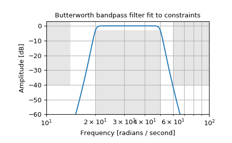

scipy.signal.buttord¶
-
scipy.signal.buttord(wp, ws, gpass, gstop, analog=False, fs=None)[source]¶ Butterworth filter order selection.
Return the order of the lowest order digital or analog Butterworth filter that loses no more than gpass dB in the passband and has at least gstop dB attenuation in the stopband.
- Parameters
- wp, wsfloat
Passband and stopband edge frequencies.
For digital filters, these are in the same units as fs. By default, fs is 2 half-cycles/sample, so these are normalized from 0 to 1, where 1 is the Nyquist frequency. (wp and ws are thus in half-cycles / sample.) For example:
Lowpass: wp = 0.2, ws = 0.3
Highpass: wp = 0.3, ws = 0.2
Bandpass: wp = [0.2, 0.5], ws = [0.1, 0.6]
Bandstop: wp = [0.1, 0.6], ws = [0.2, 0.5]
For analog filters, wp and ws are angular frequencies (e.g., rad/s).
- gpassfloat
The maximum loss in the passband (dB).
- gstopfloat
The minimum attenuation in the stopband (dB).
- analogbool, optional
When True, return an analog filter, otherwise a digital filter is returned.
- fsfloat, optional
The sampling frequency of the digital system.
New in version 1.2.0.
- Returns
See also
Examples
Design an analog bandpass filter with passband within 3 dB from 20 to 50 rad/s, while rejecting at least -40 dB below 14 and above 60 rad/s. Plot its frequency response, showing the passband and stopband constraints in gray.
>>> from scipy import signal >>> import matplotlib.pyplot as plt
>>> N, Wn = signal.buttord([20, 50], [14, 60], 3, 40, True) >>> b, a = signal.butter(N, Wn, 'band', True) >>> w, h = signal.freqs(b, a, np.logspace(1, 2, 500)) >>> plt.semilogx(w, 20 * np.log10(abs(h))) >>> plt.title('Butterworth bandpass filter fit to constraints') >>> plt.xlabel('Frequency [radians / second]') >>> plt.ylabel('Amplitude [dB]') >>> plt.grid(which='both', axis='both') >>> plt.fill([1, 14, 14, 1], [-40, -40, 99, 99], '0.9', lw=0) # stop >>> plt.fill([20, 20, 50, 50], [-99, -3, -3, -99], '0.9', lw=0) # pass >>> plt.fill([60, 60, 1e9, 1e9], [99, -40, -40, 99], '0.9', lw=0) # stop >>> plt.axis([10, 100, -60, 3]) >>> plt.show()
